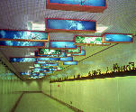

呂清夫 撰文

藝術品是萬靈丹嗎？它可以使環境「化腐朽為神奇」嗎？參加了捷運局舉辦的「捷運結合藝術」討論會，題目似乎十分新鮮，當局可謂用心良苦。但是與會人士妙論橫生，有的說，你給藝術家一面牆去創作，他覺得綁手綁腳，需要兩面牆、三面牆，甚至整個車站都變成他的畫廊又怎麼辦？有的說要有草根性，中小學生、民眾團體都應該有興趣大家一起來，……於是一個下午的會開下來，弄得主辦單位一個頭三個大，原本以為徒有四壁的車站只要掛上藝術品，便可大功告成，這下子問題已經變得複雜化。後來文化單位亦在大力提倡藝術品美化環境，似乎再亂的環境，只要掛上圖畫，便可以起死回生，一個朋友便悻悻地說，把世界名畫掛在垃圾堆上面，這樣就可以把垃圾美化過來嗎？這不是另一種好花插在牛糞上嗎P這如果不是鋸箭法或駝鳥主義，便是沒有通盤考量問題，而「設計」的首務便在通盤考量問題，至於藝術品，她是管不了那麼多的，她只管她自己而已。 即使不談所謂的「美化」，藝術品也不是放諸四海而皆「準」的，畢卡索的畫如果搬到宮殿式建築中，便可能格格不入。真正愛好藝術的收藏家必有個人特殊的品味，它可能首先表現於他的生活空間，然後反映於他的收藏品上，以這樣的收藏品掛在他的生活空間之中，自然一拍即合，相得益彰。至於公共環境，根本沒有這樣的條件，又怎麼能夠「美化」或「結合」呢？ 自然，藝術家也可以「紆尊降貴」，稍稍壓制自己奔放的個性，力求和環境配台，才去製作。但是這一來藝術將不成其為藝術，因為藝術精髓所在的「個性」已經流失，就像文學家改而去寫應用文或公文之類，那已經進入了「設計」的範圍。那麼，我們何不將屬於藝術的歸還給藝術，屬於設計的歸還給設計？設計家是打從開頭，便將整個環境的問題充分考量在先，個性的流露則是不露痕跡的。 設計的範圍自然很廣，但是政府似乎很少善用這個社會資源。例如台北新站開幕以來，經常叫人分不清東西南北，這是因為指標設計不合乎人的生、心理要求，這就需要找視覺設計家，才能解決問題。又如和科隆公車很像很像的台北彩虹公車，雖然孤立起來看還不難看，但在交通混亂、天氣炎熱、烏煙瘴氣的台北街頭，這種「花」車就要重新評估，就要找工業設計家，才能對症下藥，但台北的工業設計界並沒有人受過市府的青睞。再如都市髒亂、圍籬橫行，與其所費不貲的掛掛畫藏拙，不如請來景觀設計家，從根本上予以解決。至於捷運車站的室內裝潢，也不是掛掛畫填填空的問題，它要找的人才是室內設計家、工藝設計家，而不是畫家！ 畫家自然也可以變設計家，但要經過相當的調適及徹底的訓練。但是畫家一旦「下海」，也有可能回不去的危險。其所以說「下海」的原因之一，乃在於藝術是「無價」的，而設計是相對地廉價的。在此，捷運局似乎不必感到頭大，問題似乎相當簡單，只要找來設計師，設計比較廉價的作品印可，用不著花天文數字的經費去買藝術品，因為那是美術館的事。除非設計師通盤考量之後，認為某處確有需要一兩件「名畫」，才去花錢。同樣的，中小學生的作品如果在設計師評估之下認為確有必要時，才加以採用，不過到頭來還是設計師主控的作品。 分不清畫家和設計家差別，是台灣文化界的悲哀，事實上台灣由於傳播媒體的威力，常常出現一些十項全能的文化人，同時只要在媒體上經常露面，似乎就可以無所不能，於是名畫家理所當然也是設計家，文學家也常是藝術評論家，其實在隔行如隔山的情況下，這種「前近代」的亂局都犯了邏輯上的嚴重錯誤。這一錯誤常便各界在利用文化資源時找不到著力點，常常亂成一團，這次捷運局的頭痛即肇因於此。但願主其事的文建會要帶頭釐清觀念，未來的公共電視台，更不要像目前的電視這樣，成了文化分業的亂源。如是則文化幸甚、各界幸甚。